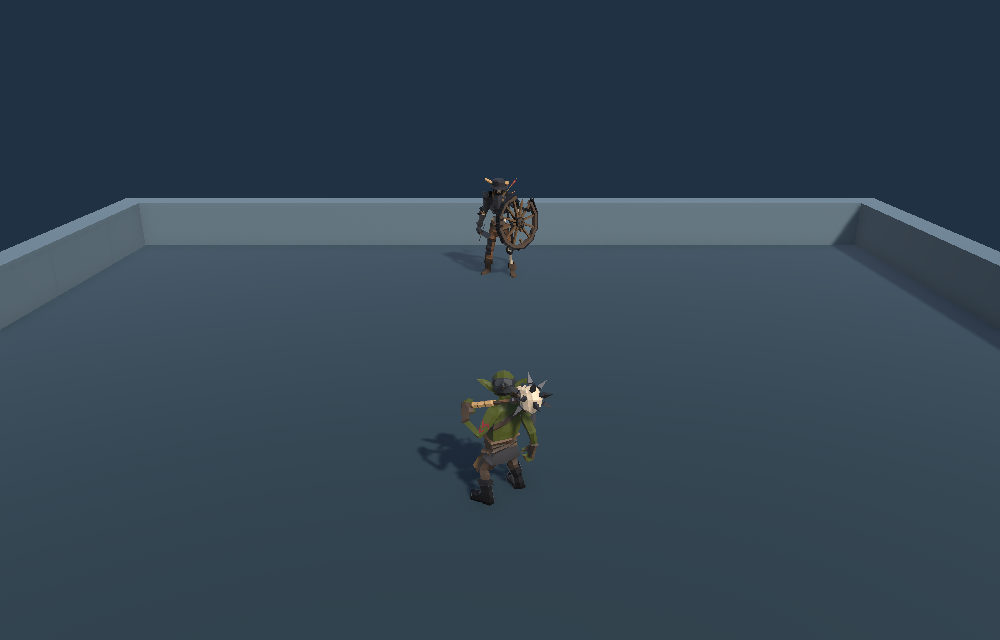
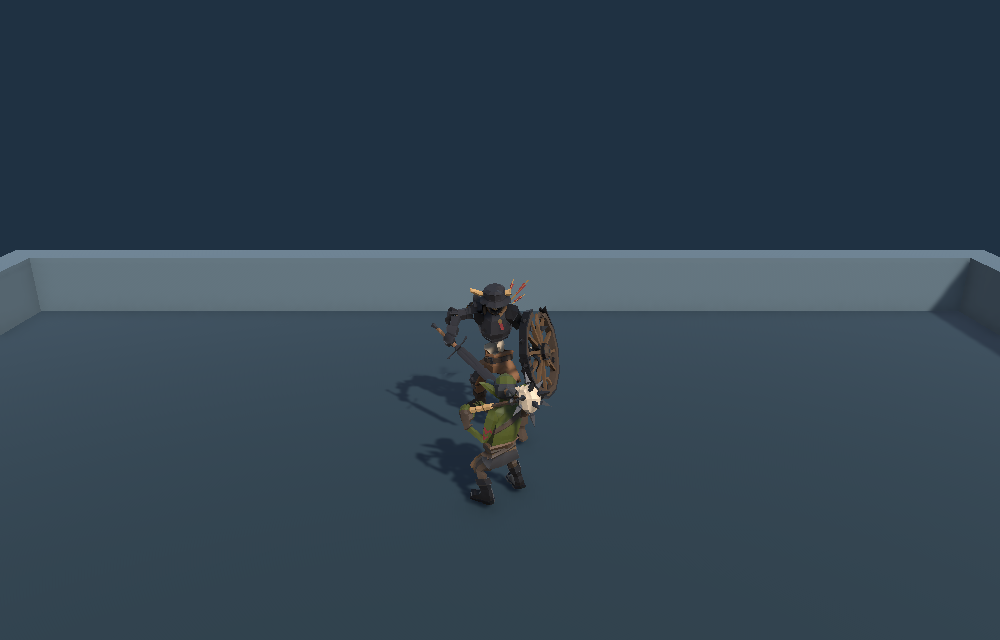
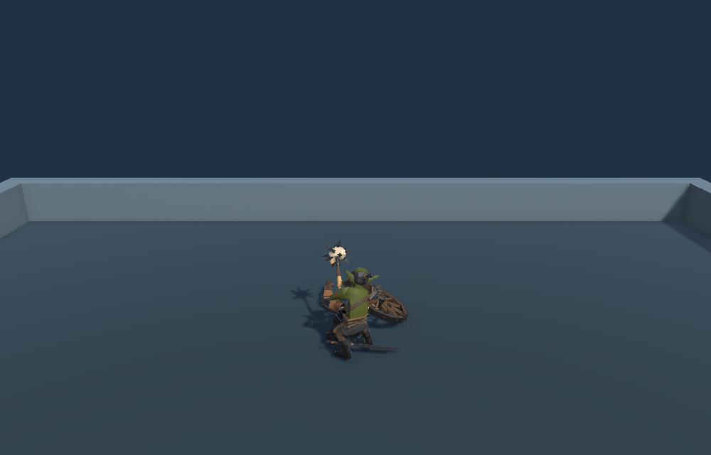

Tracefolio REPORTS & ISSUES
Tracefolio REPORTS & ISSUES고블린과 스켈레톤 근접 전투 프로토타입
완료기존 에셋과 모체 프로젝트 구조로 단일 전투 씬을 구현하고 검증합니다.
목표와 완료 기준
신규 구매 없이 고블린 플레이어와 스켈레톤 적을 배치하고 모체 구조를 검토합니다.
순차 작업 메뉴얼
순서대로 구현·QA를 확인합니다. 후속 회차에는1~5개만 선택하며 전체 미완료 목록은 보존합니다.
T01대화·모체·기존 에셋 검토완료QA 통과
- 실행
- 공유 대화와 로컬 모체 코드, 크리처 프리팹을 읽습니다.
- 완료 기준
- 기존 플레이어와 상대 모델을 선정하고 가져올 구조를 정합니다.
- QA 절차
- 프리팹 참조와 모체 컨트롤러·Pawn 의존성을 대조합니다.
- 순서·수정
- 선행 작업 없음 · r1 · 이번 회차 대상
- 실제 결과
- 공유 대화와 원본 프리팹을 확인하고 고블린과 스켈레톤을 선정했습니다. Pawn·컨트롤러 역할 분리를 채택했습니다.
- 최근 QA
- 기존 에셋과 모체 역할 분리를 확인했습니다.CTL_Humanoids 컨트롤러, 고블린·스켈레톤 프리팹 참조, SampleProjectForUnity PawnController·Pawn·AIController 소스 · 2026-11-09T15:48:42.3658659+09:00
T02전투 씬 구성 및 실행완료QA 통과
- 실행
- 두 Pawn, 입력·AI, 카메라, 운동장을 씬에 연결합니다.
- 완료 기준
- Playground에서 근접 전투와 재시작이 작동합니다.
- QA 절차
- 저장·재열기한 씬에서 가상 키보드 상태를 게임 프레임에 적용하고, 사거리 도달 이후 양쪽 피해와 스켈레톤 사망·재시작을 검증합니다.
- 순서·수정
- T01 · r2 · 이번 회차 대상
- 실제 결과
- Unity Play Mode에서 이동·추격·헛스윙·피격·사망·재시작이 통과했습니다.
- 최근 QA
- 이동·추격·헛스윙·양쪽 피해·사망·R 재시작이 통과했습니다.Unity 6000.0.83f1 FANTASYA_QA_PASS, 저장한 씬·소스·머티리얼·스크린샷 해시 대조 · 2026-11-09T15:48:42.3658659+09:00



T03문서 및 기록 검증완료QA 통과
- 실행
- README와 Dosc를 갱신하고 공개 아카이브용 결과를 등록합니다.
- 완료 기준
- 플레이 조작, 구조, 검증과 보고서 본문이 열립니다.
- QA 절차
- 문서 링크·그림·내비게이션과 공개 결과 HTML을 확인합니다.
- 순서·수정
- T02 · r1 · 이번 회차 대상
- 실제 결과
- README·Dosc 로컬 문서 링크 및 내비게이션, Tracefolio 공개 본문·목록·첨부를 검증했습니다.
- 최근 QA
- 로컬 문서와 공개 결과가 확인되었습니다.로컬 경로·앵커 58개 및 내비게이션 검사, Tracefolio verify.mjs, 공개 보고서·카탈로그·PNG 3개 GET 및 PNG SHA-256 일치 · 2026-11-09T15:48:42.3658659+09:00
QA 반복 기록
실패 → 수정 → 해당 QA → 영향 범위 회귀 → 전체 최종 QA 순서로 확인합니다. 과거 실패를 삭제하지 않습니다.
Q01 · 작업 QA2026-11-09T15:32:23+09:001/1 통과
공유 대화와 프로젝트 구조 검토
기존 에셋과 모체 역할 분리를 확인했습니다.
CTL_Humanoids 컨트롤러, 고블린·스켈레톤 프리팹 참조, SampleProjectForUnity PawnController·Pawn·AIController 소스Q02 · 작업 QA2026-11-09T15:43:04+09:000/1 통과
재검증 전까지 관찰한 프로젝트 잠금과 배치 입력·미세 이동 실패 정리
첫 실행은 프로젝트 잠금으로 차단됐고, 격리 배치 실행에서 가상 입력과 미세 이동 문제로 이동·추격 검사가 실패했습니다.
UnityLockfile 공유 위반, Keyboard movement failed, Monster chase failed 및 씬 m_MinMoveDistance 0.001Q03 · 회귀 QA2026-11-09T15:44:01+09:001/1 통과
씬 설정 조정 후 저장·재열기와 전체 전투 재실행
이동·추격·헛스윙·양쪽 피해·사망·R 재시작이 통과했습니다.
Unity 6000.0.83f1 FANTASYA_QA_PASS, 저장한 씬·소스·머티리얼·스크린샷 해시 대조Q04 · 전체 최종 QA2026-11-09T15:48:42.3658659+09:003/3 통과
모든 작업의 현재 버전과 결과 공개 확인
기존 에셋과 모체 역할 분리를 확인했습니다.
CTL_Humanoids 컨트롤러, 고블린·스켈레톤 프리팹 참조, SampleProjectForUnity PawnController·Pawn·AIController 소스이동·추격·헛스윙·양쪽 피해·사망·R 재시작이 통과했습니다.
Unity 6000.0.83f1 FANTASYA_QA_PASS, 저장한 씬·소스·머티리얼·스크린샷 해시 대조로컬 문서와 공개 결과가 확인되었습니다.
로컬 경로·앵커 58개 및 내비게이션 검사, Tracefolio verify.mjs, 공개 보고서·카탈로그·PNG 3개 GET 및 PNG SHA-256 일치남은 작업과 다음 반복
Standalone·웹 빌드 및 실물 입력 장치 테스트는 이번 Play Mode 검증 범위 밖입니다.
변경 이유: 열려 있는 프로젝트를 보존하기 위해 격리 복사본으로 검증했고, 배치 프레임의 짧은 이동과 포커스 문제를 구분하여 두 캐릭터의 최소 이동 거리와 QA 입력 절차를 조정했습니다.
현재 작업 목록에 미완료 항목이 없습니다. 전체 최종 QA 기록도 확인하세요.
남은 작업으로 소수 후속 회차 만들기다른 버전·회차 1개
1회차 · v1.0.0 · 2026-11-09T06:34:47.729Z · 준비작업 시간
제안 시간: 15~25분 · 2026-11-09 15:28:35 KST 시작
실제로 완료된 시간: 20분 6초 · 2026-11-09 15:48:42 KST 공개 결과 확인 기준
XERJ: 미사용 — MCP와 프로젝트 검색 실행 경로가 확인되지 않아 rg로 대체